Paris · la Seine
Paris est la capitale de la France. On y trouve la tour Eiffel, construite pour l'Exposition universelle de 1889. Le soir, on peut se promener le long de la Seine et admirer les monuments illuminés.
巴黎是法国的首都。这里有为 1889 年世界博览会建造的埃菲尔铁塔。晚上可以沿着塞纳河散步，欣赏灯火通明的名胜古迹。
查看旧图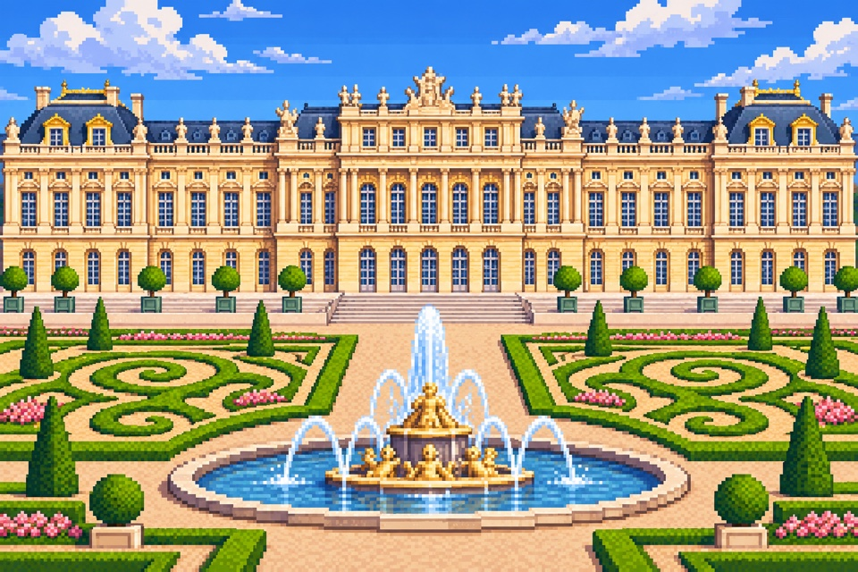
Château de Versailles
Le château de Versailles était la résidence de Louis XIV, le « Roi-Soleil ». Sa galerie des Glaces et ses immenses jardins attirent des millions de visiteurs chaque année.
凡尔赛宫曾是“太阳王”路易十四的居所。宫里的镜厅和广阔的花园每年吸引数百万游客。
查看旧图
Vieux-Port et Notre-Dame-de-la-Garde
Marseille est la plus ancienne ville de France : elle a été fondée par des Grecs il y a plus de 2 600 ans. Du haut de sa colline, la basilique Notre-Dame-de-la-Garde veille sur le port et sur la mer.
马赛是法国最古老的城市，两千六百多年前由希腊人建立。守护圣母圣殿坐落在山顶，守望着港口和大海。
查看旧图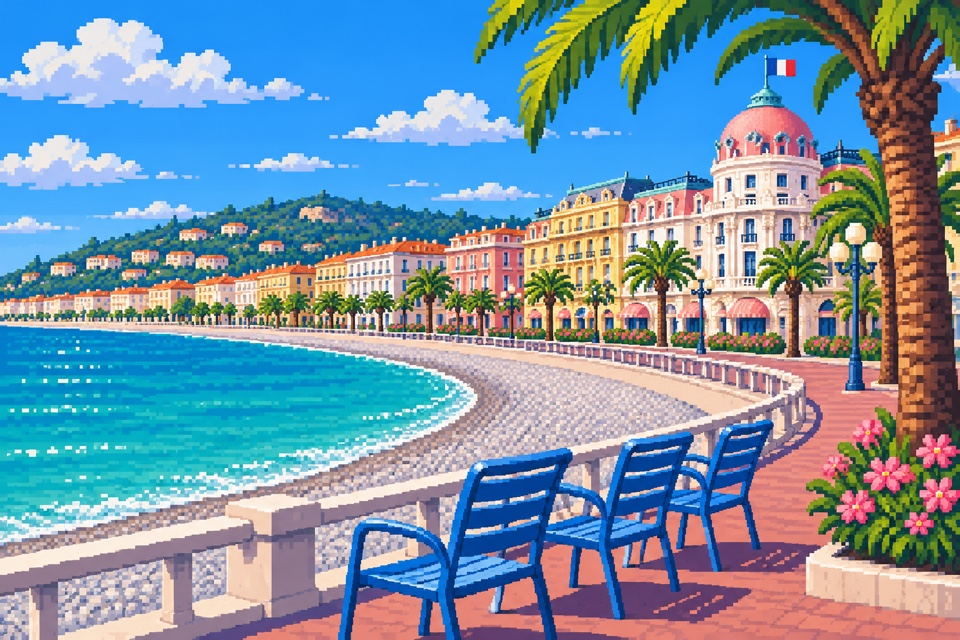
Promenade des Anglais
À Nice, la promenade des Anglais longe la mer sur sept kilomètres. Les habitants s'y assoient sur les célèbres chaises bleues pour regarder le soleil se coucher sur la Méditerranée.
在尼斯，英国人漫步大道沿着海边延伸七公里。当地人坐在著名的蓝色椅子上，看太阳落入地中海。
查看旧图
Fourvière et les quais de Saône
Lyon se trouve au confluent du Rhône et de la Saône. On l'appelle souvent la capitale de la gastronomie. Sur la colline, la basilique de Fourvière domine la ville.
里昂位于罗讷河与索恩河的交汇处，常被称为美食之都。富维耶圣母院矗立在山丘上，俯瞰全城。
查看旧图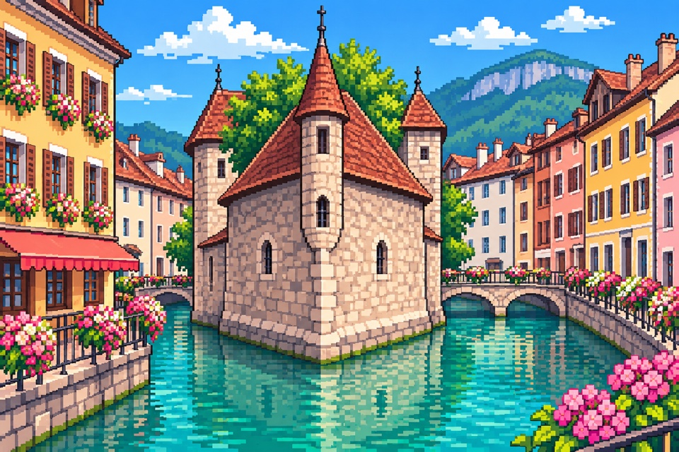
Palais de l’Isle
Annecy est surnommée la « Venise des Alpes » à cause de ses canaux. Le palais de l'Isle, une ancienne prison en forme de bateau, se trouve au milieu de la rivière. Son lac est l'un des plus purs d'Europe.
安纳西因城中的运河被称为“阿尔卑斯山的威尼斯”。岛宫曾是一座监狱，形状像一条船，就立在河中央。安纳西湖是欧洲最清澈的湖泊之一。
查看旧图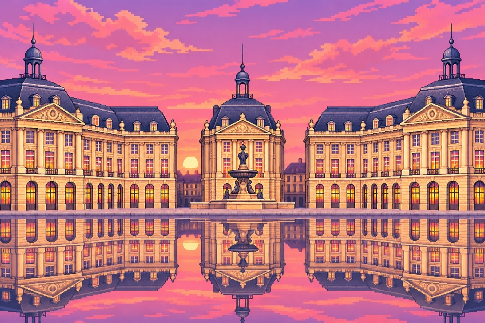
Place de la Bourse et miroir d’eau
Bordeaux est connue dans le monde entier pour ses vins. Devant la place de la Bourse, le miroir d'eau reflète les façades du XVIIIe siècle : c'est le plus grand miroir d'eau du monde.
波尔多以葡萄酒闻名世界。交易所广场前的水镜倒映着 18 世纪的建筑立面，它是世界上最大的水镜。
查看旧图
Rocher de la Vierge
Biarritz, au Pays basque, est une ville de surf. Le rocher de la Vierge, relié à la côte par une passerelle, résiste aux grosses vagues de l'océan Atlantique.
比亚里茨位于巴斯克地区，是一座冲浪小城。圣母岩由一座小桥与海岸相连，迎着大西洋的巨浪屹立不倒。
查看旧图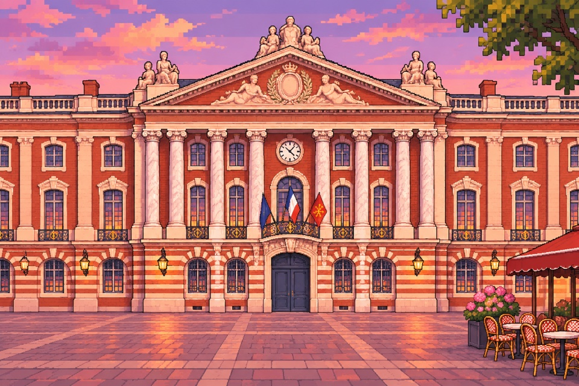
Capitole de Toulouse
On appelle Toulouse la « Ville rose » à cause de la couleur de ses briques. C'est aussi la capitale européenne de l'aéronautique : les avions Airbus y sont assemblés.
图卢兹因砖墙的颜色被称为“玫瑰之城”。它也是欧洲的航空之都，空客飞机就在这里组装。
查看旧图
Cité de Carcassonne
La Cité de Carcassonne est une ville fortifiée du Moyen Âge. Avec ses 52 tours et ses deux enceintes de remparts, elle ressemble à un château de conte de fées.
卡尔卡松古城是一座中世纪的要塞城市。它有 52 座塔楼和两道城墙，看起来像童话里的城堡。
查看旧图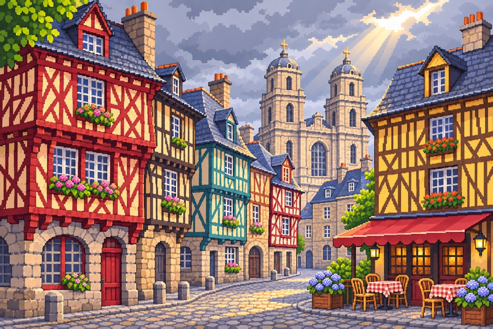
Maisons à colombages
Rennes est la capitale de la Bretagne. Dans le centre historique, les maisons à colombages aux couleurs vives datent du Moyen Âge. C'est une ville très étudiante et animée.
雷恩是布列塔尼的首府。老城区里色彩鲜艳的木筋屋可以追溯到中世纪。这是一座学生众多、充满活力的城市。
查看旧图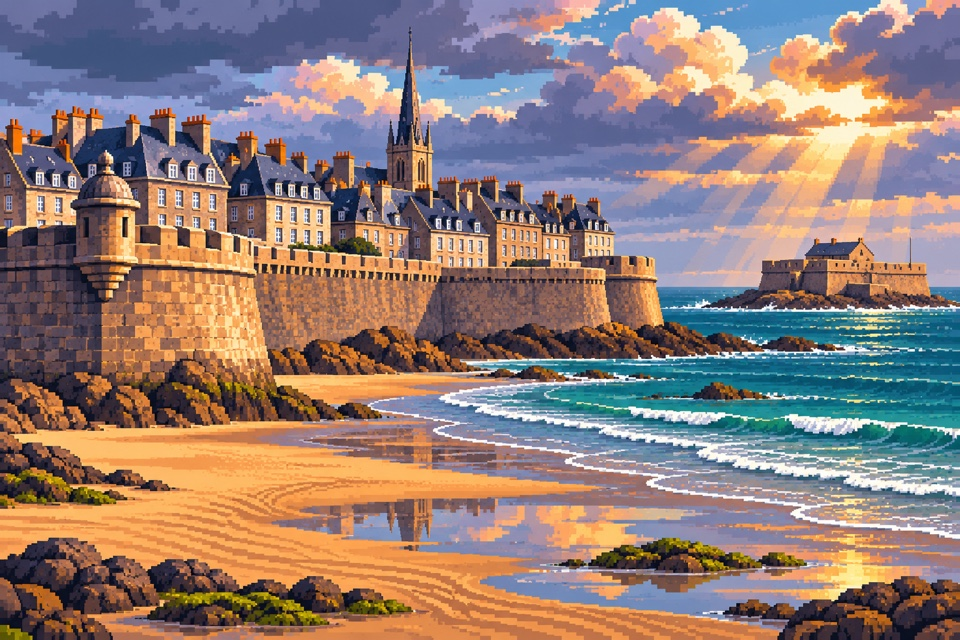
Remparts de Saint-Malo
Saint-Malo est entourée de remparts. Autrefois, c'était la ville des corsaires. À marée basse, on peut marcher jusqu'à de petites îles ; à marée haute, la mer arrive au pied des murs.
圣马洛被城墙环绕，从前是海盗之城。退潮时可以步行走到附近的小岛；涨潮时，海水一直漫到城墙脚下。
查看旧图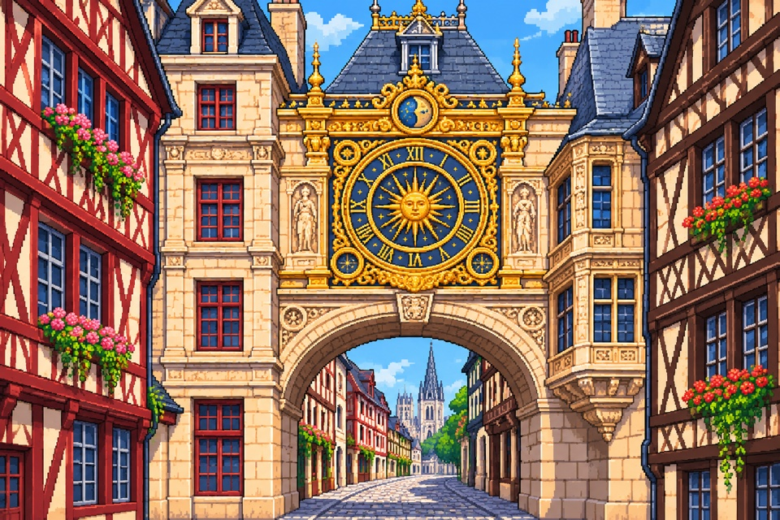
Gros-Horloge
À Rouen, le Gros-Horloge est une horloge astronomique de la Renaissance placée sur une arche, au-dessus d'une rue. C'est aussi dans cette ville que Jeanne d'Arc est morte en 1431.
在鲁昂，大钟是一座文艺复兴时期的天文钟，架在一条街道上方的拱门上。圣女贞德也是 1431 年在这座城市牺牲的。
查看旧图
Abbaye du Mont-Saint-Michel
Le Mont-Saint-Michel est une abbaye construite sur un rocher, au milieu d'une baie. Les marées y sont parmi les plus fortes d'Europe : parfois, la mer entoure complètement le mont.
圣米歇尔山是建在海湾中央一块岩石上的修道院。这里的潮汐是欧洲最强的之一，有时海水会把整座山完全包围。
查看旧图
Petite France et cathédrale
Strasbourg est le siège du Parlement européen. Sa cathédrale en grès rose a une seule flèche, haute de 142 mètres. Dans le quartier de la Petite France, les maisons à colombages se reflètent dans les canaux.
斯特拉斯堡是欧洲议会所在地。用粉红砂岩建成的大教堂只有一座尖塔，高 142 米。在小法兰西区，木筋屋倒映在运河里。
查看旧图
Cathédrale Notre-Dame de Reims
Les rois de France étaient couronnés dans la cathédrale de Reims. Aujourd'hui, la ville est surtout célèbre pour le champagne, qu'on fait vieillir dans des caves creusées sous la terre.
法国国王曾在兰斯大教堂加冕。如今这座城市最出名的是香槟酒，它们在地下挖出的酒窖里慢慢陈酿。
查看旧图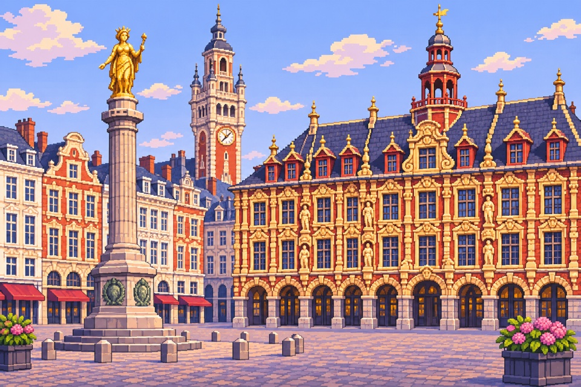
Grand-Place et Vieille Bourse
Lille est une grande ville proche de la Belgique. Son beffroi est inscrit au patrimoine mondial de l'UNESCO. Chaque septembre, la Braderie de Lille devient le plus grand marché aux puces d'Europe.
里尔是一座靠近比利时的大城市，它的钟楼被列入联合国教科文组织世界遗产。每年九月，里尔大集市都会变成欧洲最大的跳蚤市场。
查看旧图
Hortillonnages et cathédrale
À Amiens, les hortillonnages sont des jardins flottants entourés de canaux. On les visite en barque, au calme. La ville possède aussi la plus grande cathédrale gothique de France.
在亚眠，水上花园是被运河环绕的漂浮园地，可以坐小船静静游览。这座城市还拥有法国最大的哥特式大教堂。
查看旧图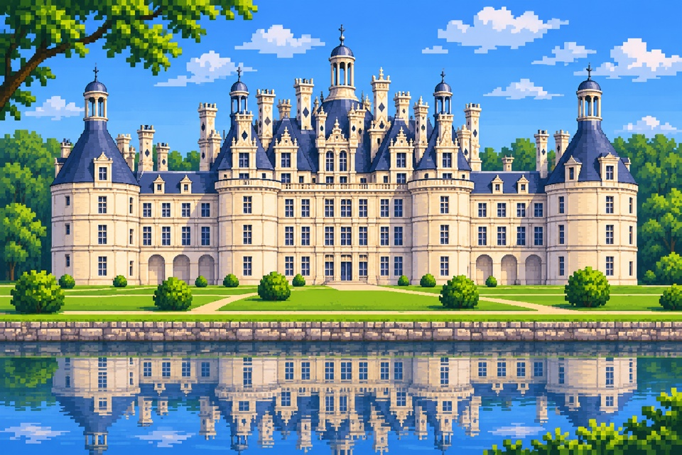
Château de Chambord
Le château de Chambord est le plus grand des châteaux de la Loire. Son célèbre escalier à double révolution a peut-être été imaginé par Léonard de Vinci : deux personnes peuvent le monter sans jamais se croiser.
香波尔城堡是卢瓦尔河谷最大的城堡。它著名的双螺旋楼梯据说出自达·芬奇的构想：两个人同时上楼，却永远不会碰面。
查看旧图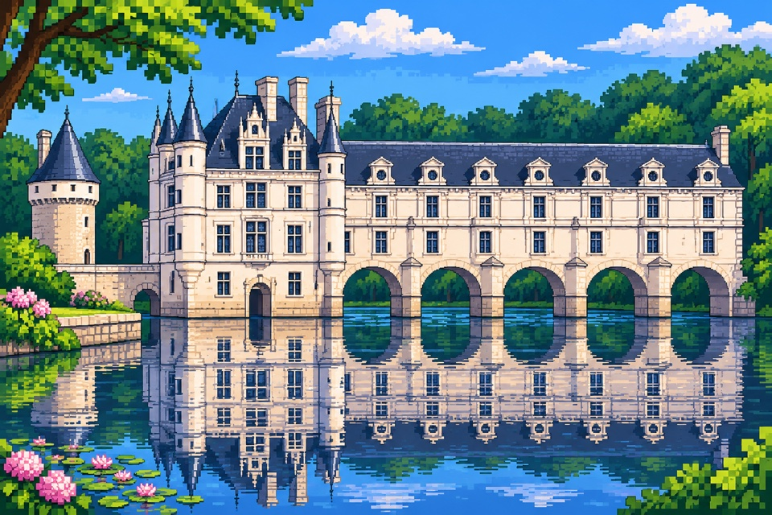
Château de Chenonceau
Le château de Chenonceau est construit sur des arches au-dessus du Cher. On l'appelle le « château des Dames », car plusieurs femmes célèbres l'ont habité et transformé.
舍农索城堡建在谢尔河上的一排拱桥上。它被称为“女人的城堡”，因为好几位著名的女性曾住在这里并改建了它。
查看旧图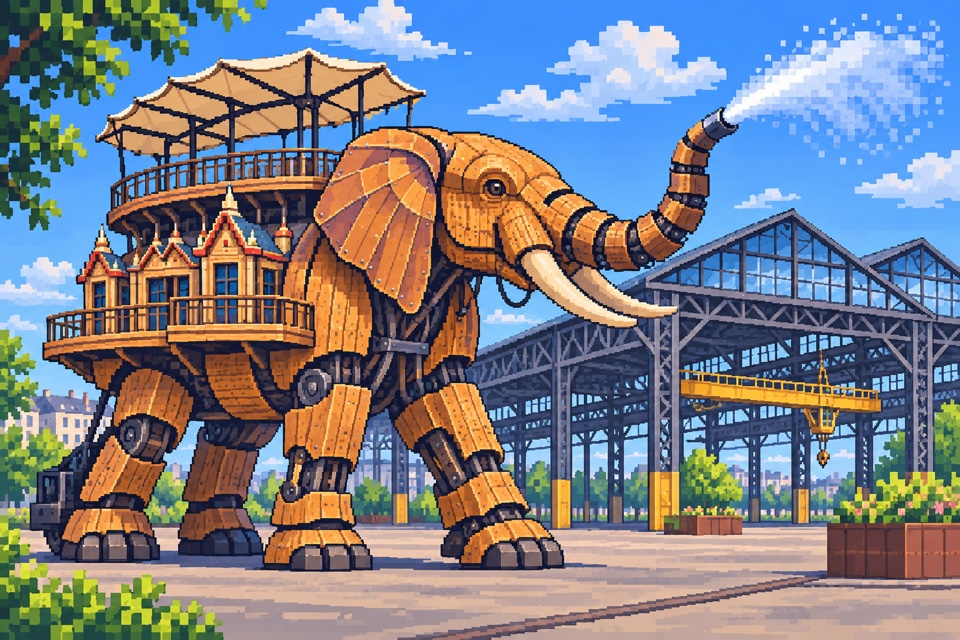
Grand Éléphant des Machines de l’île
À Nantes, les Machines de l'île présentent un éléphant mécanique de douze mètres de haut. Il se promène avec des passagers sur le dos ! Nantes est aussi la ville natale de Jules Verne.
在南特，“岛上机器”展出一头 12 米高的机械大象，它会驮着乘客四处走动！南特也是儒勒·凡尔纳的故乡。
查看旧图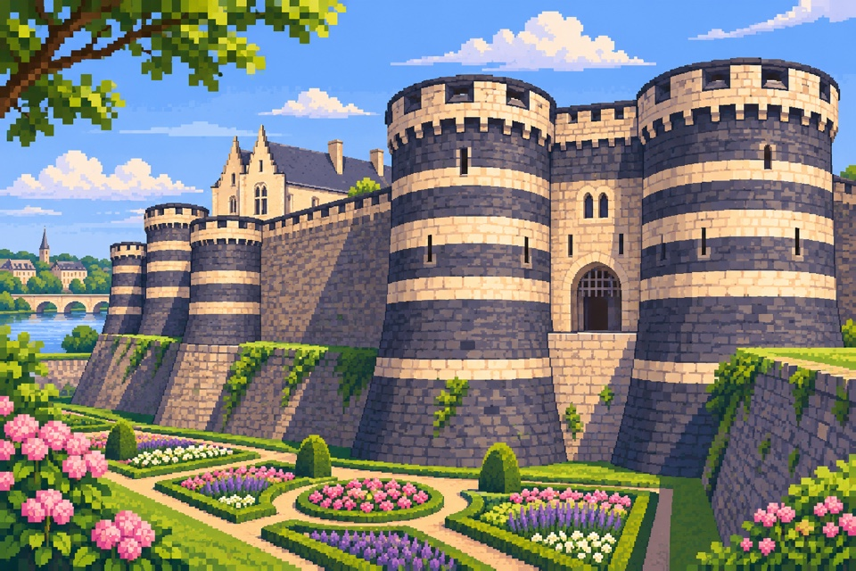
Château d’Angers
Le château d'Angers a dix-sept grosses tours rayées de pierre sombre et de pierre claire. À l'intérieur, on peut voir la tapisserie de l'Apocalypse, la plus grande tapisserie médiévale au monde.
昂热城堡有十七座粗大的塔楼，深色和浅色的石头交替成条纹。城堡里收藏着《启示录》挂毯，它是世界上最大的中世纪挂毯。
查看旧图
Chouette de Notre-Dame
Dijon est célèbre pour sa moutarde. Dans la vieille ville, une petite chouette est sculptée sur un mur de l'église Notre-Dame : on dit qu'elle porte bonheur si on la touche de la main gauche.
第戎以芥末闻名。在老城的圣母教堂墙上，雕着一只小猫头鹰。据说用左手摸一摸它就会带来好运。
查看旧图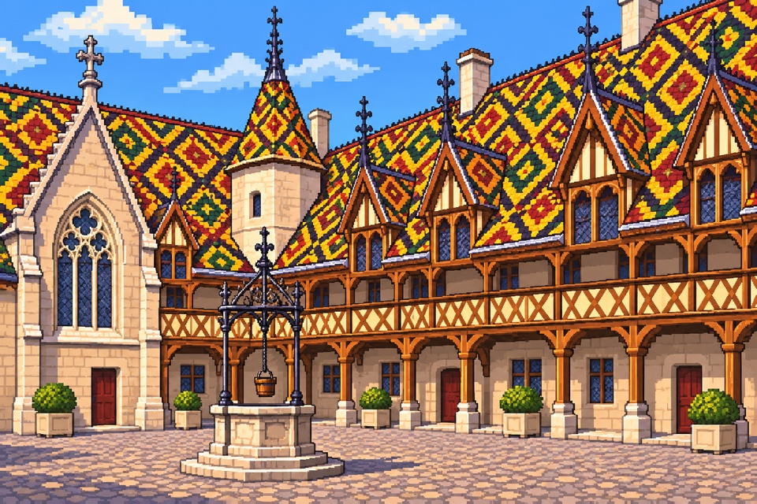
Hospices de Beaune
Beaune est au cœur des vignobles de Bourgogne. Les Hospices de Beaune, un ancien hôpital du XVe siècle, sont connus pour leurs toits couverts de tuiles colorées.
博讷位于勃艮第葡萄园的中心。博讷济贫院原是一座 15 世纪的医院，以屋顶上色彩缤纷的瓦片闻名。
查看旧图Îles Sanguinaires
Ajaccio est la ville natale de Napoléon Bonaparte. Le soir, les îles Sanguinaires prennent une couleur rouge au coucher du soleil, à côté d'une vieille tour génoise.
阿雅克肖是拿破仑·波拿巴的故乡。傍晚，血岛在夕阳下染成红色，旁边是一座古老的热那亚塔。
查看旧图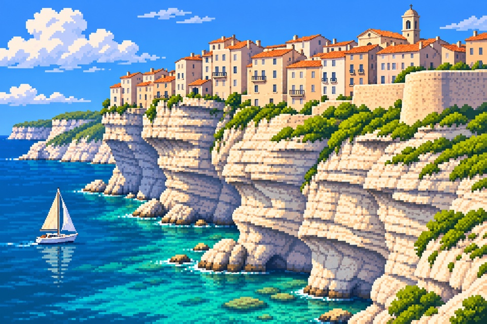
Falaises de Bonifacio
À Bonifacio, les maisons sont construites tout au bord de hautes falaises blanches. Par beau temps, on peut voir la Sardaigne, qui se trouve de l'autre côté de la mer.
在博尼法乔，房屋就建在高高的白色悬崖边上。天气好的时候，可以望见大海对岸的撒丁岛。
查看旧图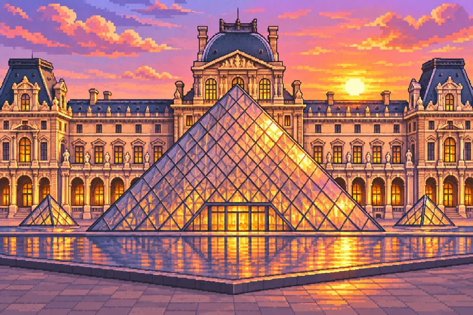
Pyramide du Louvre
Le musée du Louvre est le musée le plus visité du monde. Devant le palais, la pyramide de verre, inaugurée en 1989, sert d'entrée principale.
卢浮宫是世界上参观人数最多的博物馆。宫殿前的玻璃金字塔于 1989 年落成，是博物馆的主入口。
查看旧图
Galerie Vivienne
Le palais Brongniart, avec ses grandes colonnes, a abrité la Bourse de Paris pendant plus de 150 ans. Le quartier est aussi connu pour ses passages couverts, comme la galerie Vivienne.
布龙尼亚尔宫有一排高大的柱子，巴黎证券交易所在这里办公了 150 多年。这个街区还以带顶棚的廊街闻名，比如薇薇安廊街。
查看旧图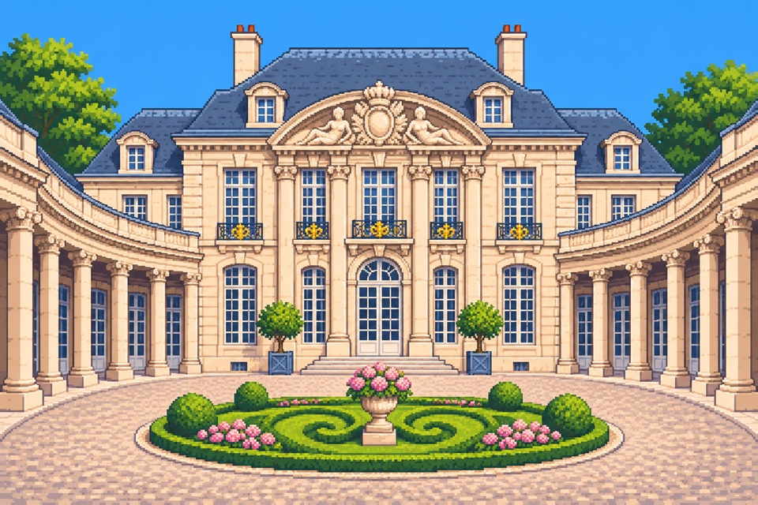
Hôtel de Soubise
Dans le Marais, l’hôtel de Soubise abrite le musée des Archives nationales. Sa cour est bordée d’une élégante colonnade.
在玛黑区，苏比斯府邸设有法国国家档案馆博物馆，庭院周围是一圈优雅的柱廊。
查看旧图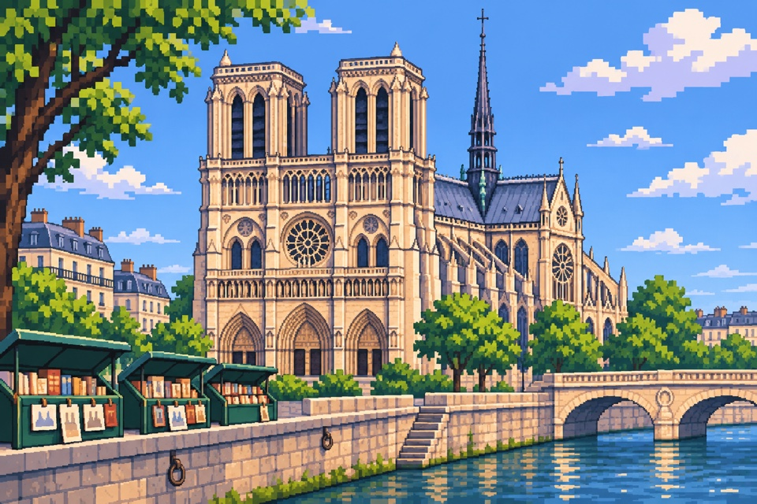
Notre-Dame de Paris
La cathédrale Notre-Dame se trouve sur l'île de la Cité. Après le grand incendie de 2019, elle a rouvert ses portes en décembre 2024.
巴黎圣母院坐落在西岱岛上。经历 2019 年的大火之后，它于 2024 年 12 月重新开放。
查看旧图
Panthéon
Au cœur du Quartier latin, le Panthéon abrite les tombeaux de grandes figures françaises, comme Victor Hugo, Marie Curie et Simone Veil.
先贤祠位于拉丁区的中心，安葬着许多法国伟人，比如维克多·雨果、玛丽·居里和西蒙娜·韦伊。
查看旧图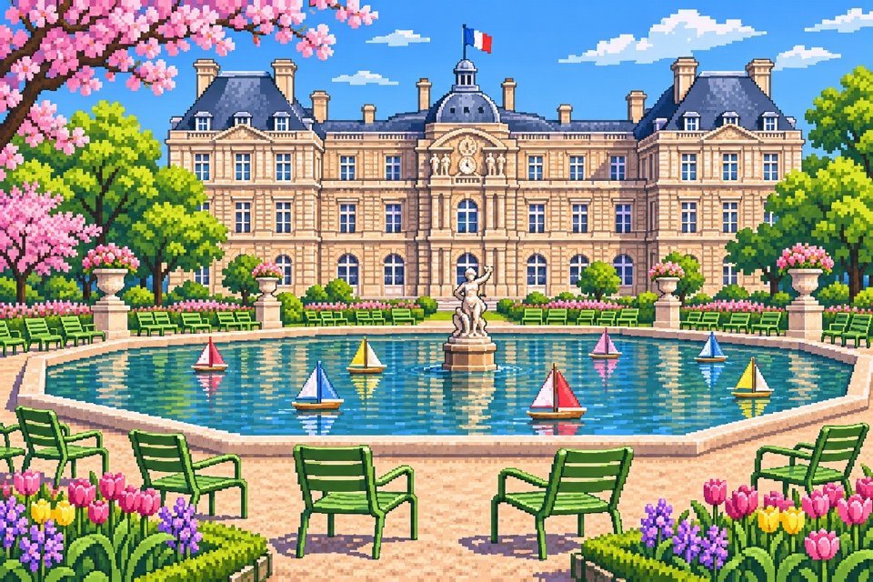
Jardin du Luxembourg
Au jardin du Luxembourg, les enfants font naviguer de petits voiliers sur le grand bassin. Le palais, au fond, accueille le Sénat.
在卢森堡公园，孩子们在大水池里放小帆船。远处的宫殿是法国参议院所在地。
查看旧图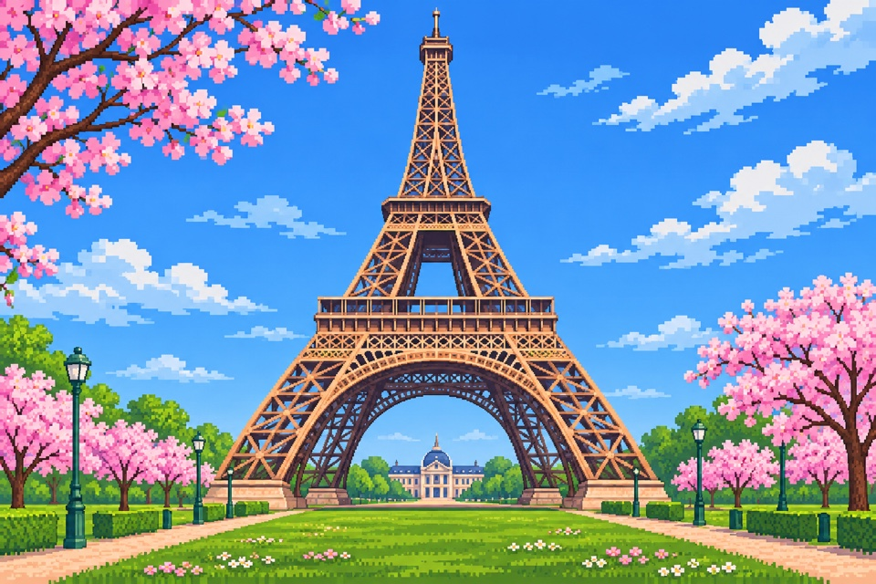
Tour Eiffel · Champ-de-Mars
La tour Eiffel mesure environ 330 mètres. Le soir, elle scintille pendant cinq minutes au début de chaque heure.
埃菲尔铁塔高约 330 米。晚上每到整点，它都会闪烁五分钟。
查看旧图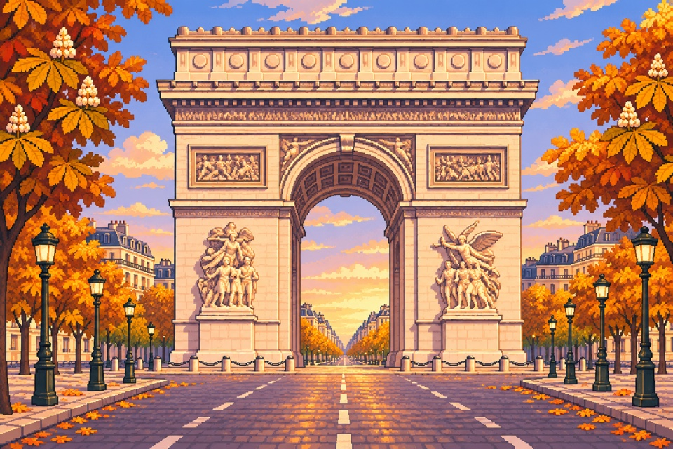
Arc de Triomphe
L'Arc de Triomphe se dresse en haut des Champs-Élysées. Sous l'arc repose le Soldat inconnu, et une flamme y est ravivée chaque soir.
凯旋门矗立在香榭丽舍大街的尽头。拱门下安葬着无名烈士，每天傍晚都会重新点燃那里的长明火。
查看旧图
Palais Garnier
L'Opéra Garnier, inauguré en 1875, est célèbre pour son grand escalier de marbre et pour son plafond peint par Marc Chagall.
加尼叶歌剧院于 1875 年落成，以大理石大楼梯和马克·夏加尔绘制的天顶画闻名。
查看旧图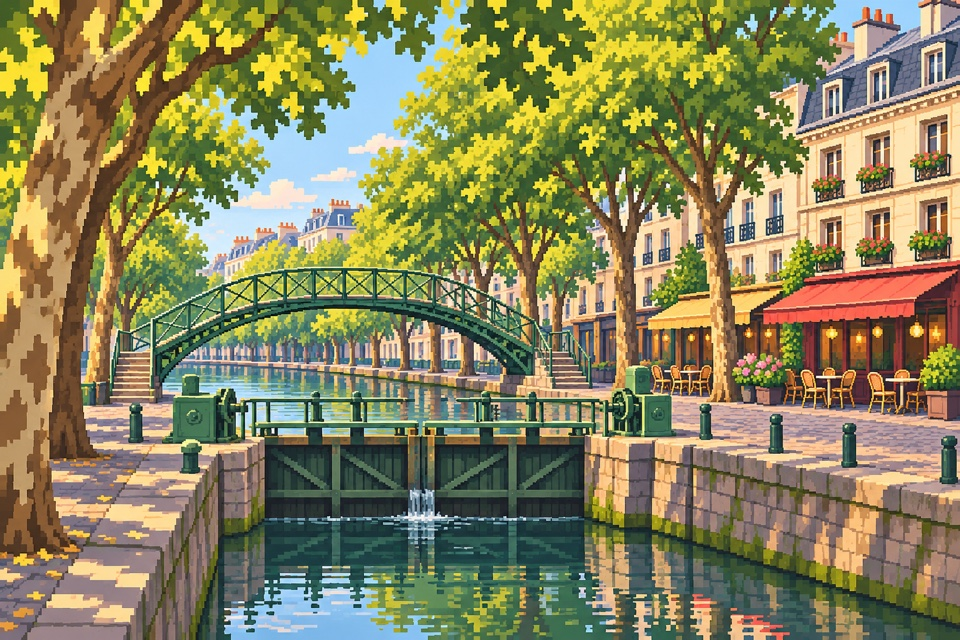
Canal Saint-Martin
Le long du canal Saint-Martin, on traverse l'eau par de jolies passerelles en fer. Aux beaux jours, les Parisiens pique-niquent sur ses quais.
沿着圣马丁运河，可以走过一座座漂亮的铁制小桥。天气好的时候，巴黎人会在河岸上野餐。
查看旧图
Colonne de Juillet · Bastille
La colonne de Juillet se dresse place de la Bastille, là où la prison a été prise le 14 juillet 1789. Tout en haut, le Génie de la Liberté brille en or.
七月柱矗立在巴士底广场，1789 年 7 月 14 日巴士底狱就是在这里被攻占的。柱顶的自由之神闪着金光。
查看旧图
Gare de Lyon
La gare de Lyon se reconnaît à sa haute tour de l'horloge. C'est de là que partent les TGV vers le sud de la France.
里昂火车站的标志是那座高高的钟楼。开往法国南部的高铁就从这里出发。
查看旧图
Bibliothèque François-Mitterrand
La Bibliothèque nationale François-Mitterrand a quatre tours de verre en forme de livres ouverts. Le 13e abrite aussi un grand quartier asiatique.
密特朗国家图书馆有四座玻璃塔楼，形状像四本打开的书。第 13 区还有一个很大的亚洲街区。
查看旧图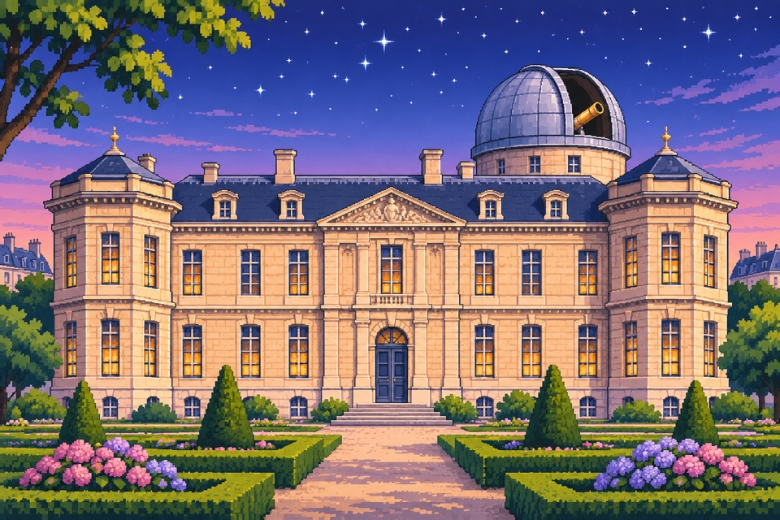
Observatoire de Paris
Dans le 14e arrondissement, l’Observatoire de Paris associe un bâtiment historique, des coupoles et des jardins. On y étudie le ciel depuis le XVIIe siècle.
在巴黎第 14 区，巴黎天文台汇集了历史建筑、观测穹顶和花园。从 17 世纪起，人们就在这里研究天空。
查看旧图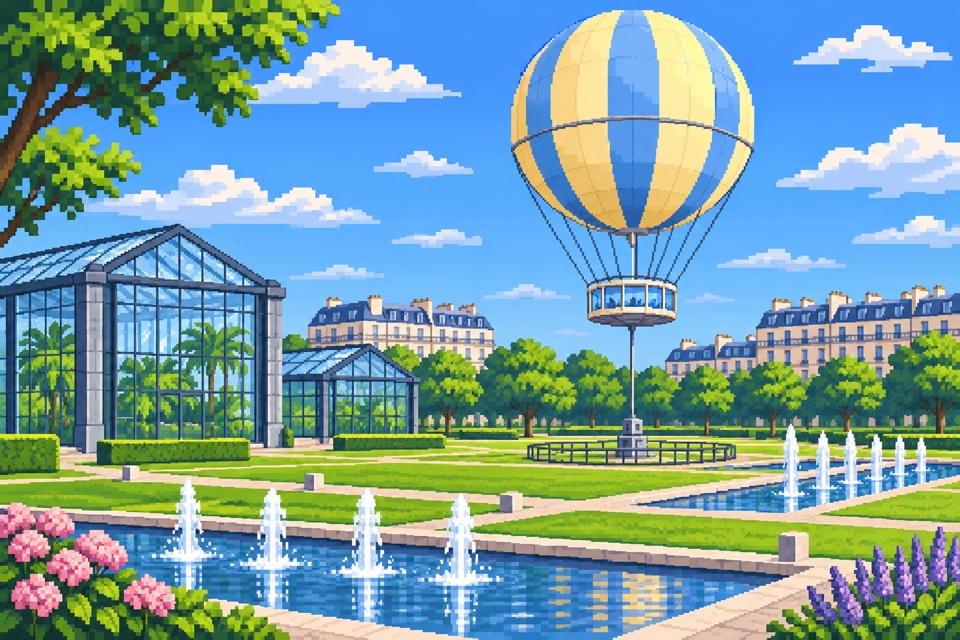
Parc André-Citroën
Dans le parc André-Citroën, un grand ballon captif s'élève à 150 mètres de haut pour admirer Paris vu du ciel.
在安德烈·雪铁龙公园，一只系留热气球能升到 150 米高，让人从空中欣赏巴黎。
查看旧图
Trocadéro
Depuis l'esplanade du Trocadéro, on a l'une des plus belles vues sur la tour Eiffel. En été, ses grandes fontaines rafraîchissent les promeneurs.
从特罗卡德罗广场可以看到最美的埃菲尔铁塔之一。夏天，这里的大喷泉给游人带来清凉。
查看旧图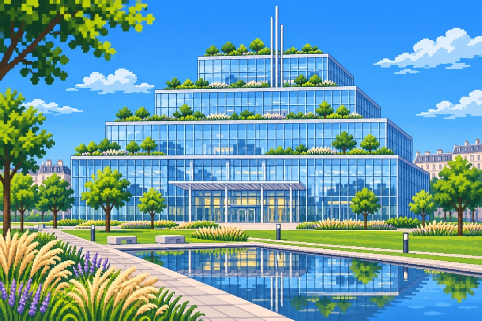
Tribunal de Paris · Batignolles
Dans le quartier des Batignolles, le Tribunal de Paris est un gratte-ciel de verre formé de blocs empilés, conçu par l'architecte Renzo Piano.
在巴蒂尼奥勒街区，巴黎司法院是一座由一层层方块叠起来的玻璃摩天楼，由建筑师伦佐·皮亚诺设计。
查看旧图
Sacré-Cœur · Montmartre
Sur la butte Montmartre, la basilique du Sacré-Cœur domine la ville. Juste à côté, les peintres de la place du Tertre font le portrait des passants.
在蒙马特高地上，圣心大教堂俯瞰全城。旁边的小丘广场上，画家们为路人画肖像。
查看旧图
Temple de la Sibylle
Au parc des Buttes-Chaumont, un petit temple rond se dresse au sommet d'une falaise, au-dessus d'un lac.
在肖蒙山丘公园，一座小小的圆形神庙立在悬崖顶上，下面是一片湖。
查看旧图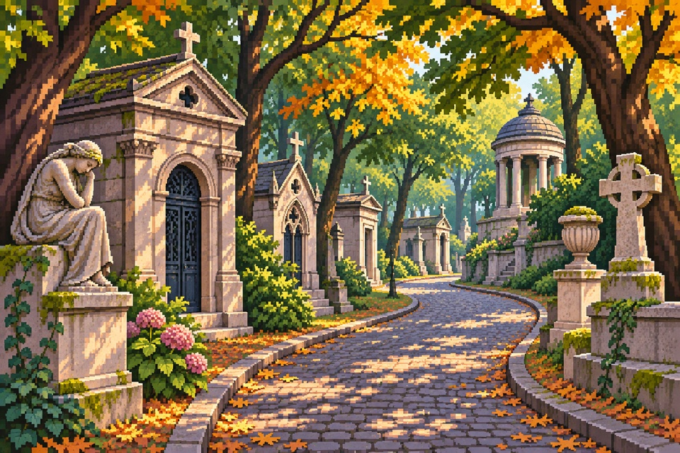
Père-Lachaise
Au cimetière du Père-Lachaise reposent de nombreuses célébrités, comme Molière, Chopin et Édith Piaf. C'est aussi un grand parc arboré.
拉雪兹神父公墓安葬着许多名人，比如莫里哀、肖邦和伊迪丝·琵雅芙。这里也是一座绿树成荫的大公园。
查看旧图
Grande Arche de La Défense
À La Défense, le grand quartier d'affaires de la région parisienne, la Grande Arche ressemble à un cube géant ouvert au milieu.
拉德芳斯是巴黎地区最大的商务区，那里的新凯旋门像一个中间掏空的巨型立方体。
查看旧图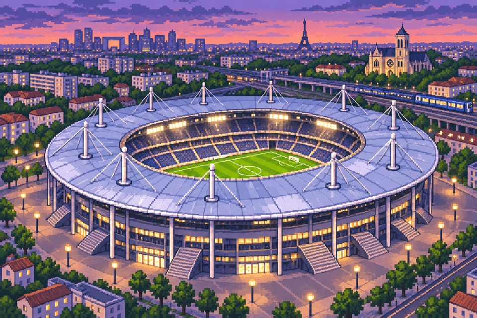
Stade de France
Le Stade de France, à Saint-Denis, accueille les grands matchs de football et de rugby. Il a aussi servi aux Jeux olympiques de 2024.
位于圣但尼的法兰西体育场举办重大的足球和橄榄球比赛，2024 年奥运会也在这里进行。
查看旧图
Château de Vincennes
Le château de Vincennes possède le plus haut donjon médiéval d'Europe : il mesure environ 50 mètres.
樊尚城堡拥有欧洲最高的中世纪主塔，高约 50 米。
查看旧图Église d’Auvers-sur-Oise
À Auvers-sur-Oise, Vincent van Gogh a peint l'église du village. Il a passé les derniers mois de sa vie dans cette petite ville.
在瓦兹河畔奥维尔，文森特·梵高画下了村里的教堂。他在这座小城度过了生命的最后几个月。
查看旧图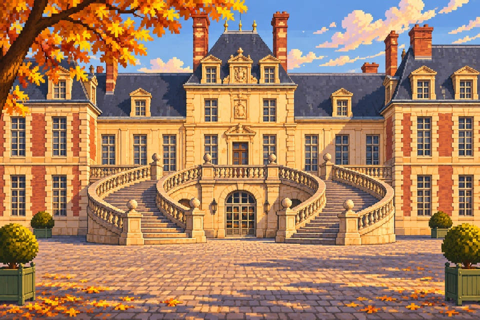
Château de Fontainebleau
Le château de Fontainebleau est célèbre pour son escalier en fer à cheval. C'est là que Napoléon a fait ses adieux à sa garde en 1814.
枫丹白露宫以马蹄形楼梯闻名。1814 年，拿破仑就是在这里告别了他的近卫军。
查看旧图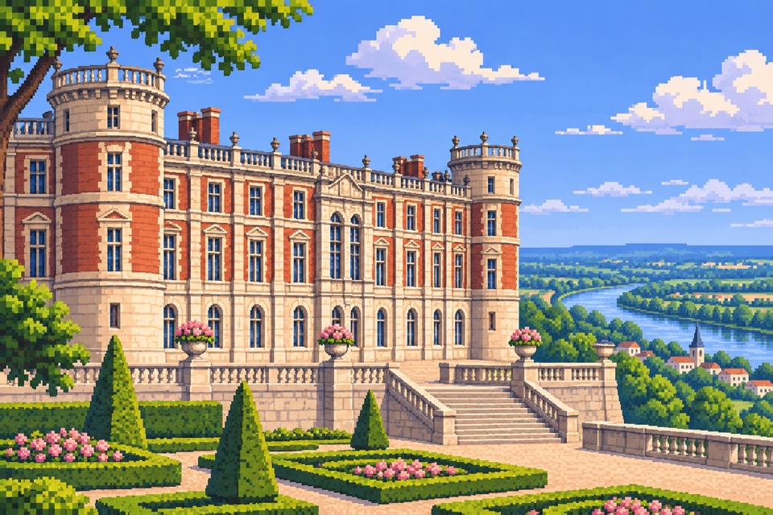
Château de Saint-Germain-en-Laye
C'est à Saint-Germain-en-Laye qu'est né Louis XIV. La longue terrasse du château offre une belle vue sur la Seine et sur Paris.
路易十四就出生在圣日耳曼昂莱。城堡前长长的露台可以远眺塞纳河和巴黎。
查看旧图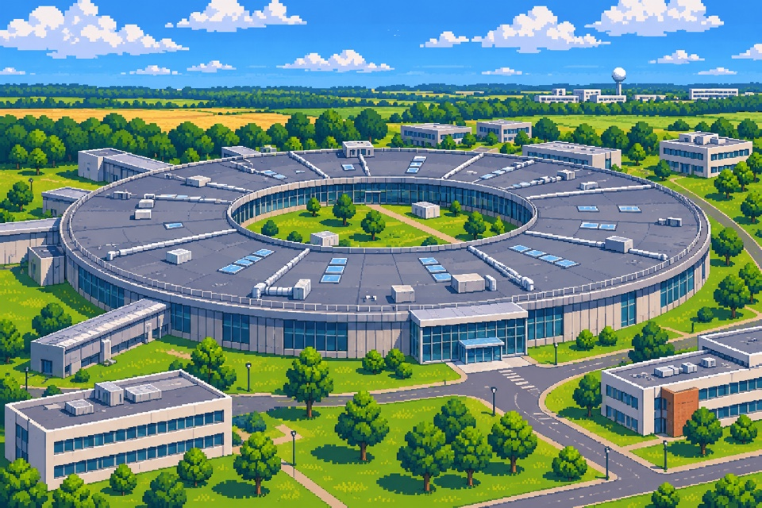
Synchrotron SOLEIL · Saint-Aubin
Sur le plateau de Saclay, le synchrotron SOLEIL est un grand anneau où les scientifiques étudient la matière grâce à une lumière très puissante.
在萨克雷高原，SOLEIL 同步辐射光源是一座巨大的环形建筑，科学家们用极强的光来研究物质。
查看旧图